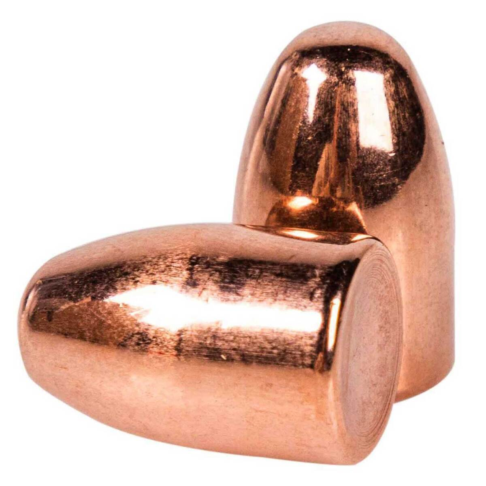
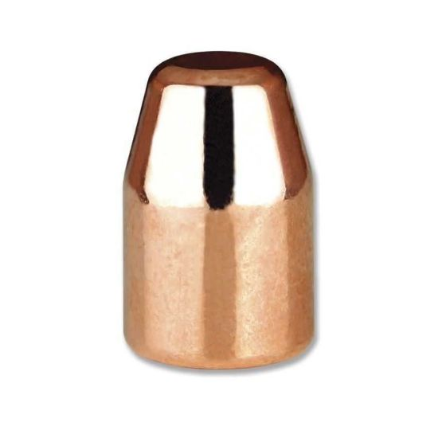
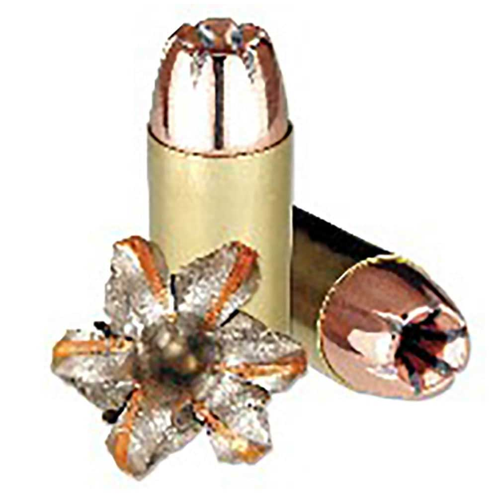

There are differences is the exterior of the projectles as well as the shapes. For this article I will just be talking about the different shapes the bullet tips can have. There are three main types: round nose, flat point, hollow point. Round nose have a rounded tip and flat point is just flat. Round nose and flat point pretty much serve the same purpose which is target practice. The difference is that while a firearm may operate better with round nose, it will not create as clean a hole as flat point on paper. Hollow point bullets looks like a flat point but someone took a drill to the tip. the purpose of the hollow point is that it will expand on impact create massive damage. It is used for self-defense and good for mitigating overpenetration.
- Round Nose
- - Rounded tip used mainly for target practice
- Flat Point
- - Flat tip used mainly for target practice. Punches cleaner holes in paper than round nose.
- Hollow Point
- - Designed to expand upon impact causing major damage to the target. Mitigates overpenetration, good for lowering collateral damage.